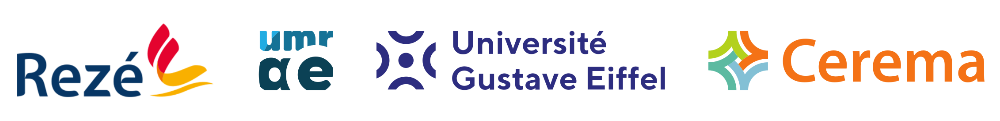

Le projet SonoRezé est une initiative démarrée en 2021, puis poursuivie en 2023, financée grâce à deux programmes de recherche décrits ci-dessous.
Sonorezé II
2023-2025
Le projet
Le projet "SonoRezé II" s'inscrit dans la continuité du premier volet "SonoRezé".
Dans le second volet, il s’agira d’approfondir le diagnostic des environnements sonores de la ville de Rezé réalisé dans le premier volet, mais également de définir collectivement quelques actions à mener autour de la problématique des environnements sonores, et de réfléchir au déploiement de cette approche innovante sur une variété de territoires.
Consortium
SonoRezé II est réalisé par les acteurs suivants : - Collectivité : Ville de Rezé - Académiques : Unité Mixte de Recherche en Acoustique Environmentale (UMRAE - Université Gustave Eiffel), Laboratoire "Espaces et SOciétés" (ESO - UMR 6590 - Institut Agro Rennes Angers) - Tiers veilleur : Auxilia Conseil
Le pilotage du projet est effectué par l'Université Gustave Eiffel (UMRAE)

Financement
Le projet "SonoRezé II" est financé par l'Agence Nationale de la Recherche (ANR), dans le cadre de l'Appel à projets Science avec et pour la société – Recherches participatives 1 (SAPS-RA-RP1). Ce financement, à hauteur de 249 716€, court de 2023 à 2025.

Sonorezé
2021-22
Le projet
La Ville de Rezé et l'Université Gustave Eiffel se sont associées pour réaliser un diagnostic citoyen des environnements sonores de la ville de Rezé. Grâce à la forte mobilisation des habitants, une cartographie participative des environnements sonores a été produite. De plus, des groupes de discussion associant habitants, élus et chercheurs, ont questionné la qualité des environnements sonores. Enfin, le projet a fait l'objet d'un rendu intégrant des performances artistiques originales. Ceci a constitué la première expérience de cartographie participative à l’échelle d’une collectivité.
Consortium
SonoRezé I a été réalisé par les acteurs suivants : - Collectivité : Ville de Rezé - Académiques : Unité Mixte de Recherche en Acoustique Environmentale (UMRAE - Université Gustave Eiffel)
Le pilotage du projet a été effectué par l'Université Gustave Eiffel (UMRAE)
Financement
Le projet "SonoRezé I" a été financé par l'I-Site Future dans le cadre d'un appel d'offre « chercheur.e.s citoyen.ne.s ». Ce financement, pour un montant de 14 418€, courrait de 2021 à juin 2022.